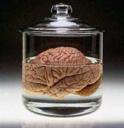

Human Nature
On Human Intelligence
By Robert J. Sternberg and James C. Kaufman

ABSTRACT
This chapter reviews recent literature, primarily from the 1990s, on human abilities. The review opens with a consideration of the question of what intelligence is, and then considers some of the major definitions of intelligence, as well as implicit theories of intelligence around the world. Next, the chapter considers cognitive approaches to intelligence, and then biological approaches. It proceeds to psychometric or traditional approaches to intelligence, and then to broad, recent approaches.
The different approaches raise somewhat different questions, and hence produce somewhat different answers. They have in common, however, the attempt to understand what kinds of mechanisms lead some people to adapt to, select, and shape environments in ways that match particularly well the demands of those environments.
CONTENTS
Introduction
Definitions of Intelligence
Westren Psychological Views
Cross-Cultural Views
Cognitive Approaches to Intelligence
Biological Approaches to Intelligence
Early Biological Theories
Modern Biological Views and Research
The Psychometric Approache to Intelligence
Theoretical Developments: Carroll.s and Horn.s
Theories
An Empirical Curiosity: The Flynn Effect
Psychometric Tests
The Bell Curve Phenomenon
Broad Theories of Intelligence and of Kinds of Intelligence
Multiple Intelligences
Successful Intelligence
True Intelligence
The Bioecological Model of Intelligence
Emotional Intelligence
Conclusion
INTRODUCTION
The study of intelligence is like a real-world Jeopardy game. Curiously, there is more agreement regarding answers than there is regarding what questions these answers answer. For example, it is uncontroversial that on conventional tests of intelligence, members of certain socially identified racial and ethnic groups differ on average. But what does such a difference show? What question does it answer? Does it answer the question of whether there are differences across groups in intelligence, whether the tests are differentially biased for members of different groups, whether different groups have had different educational opportunities, or whether different groups differ on a narrow subset of skills that constitutes only a small part of intelligence, or some other question still? To understand the field of human abilities and intelligence, one must consider questions at least as much as answers.
The goal of this paper is to consider some of the main questions being asked and answers being offered today in the field of human abilities, in general, and of human intelligence, in particular, and to consider the match between them. What are the important questions, and what are the questions that available data answer? We organize our review around some of the main paradigms in the study of human abilities, because the paradigm one uses generates, to a large extent, the questions that are viewed as important or not important. Before we consider these theories, however, we first consider even what intelligence is, going back in history and up to the present.
DEFINITIONS OF INTELLIGENCE
What is intelligence? It turns out that the answer depends on whom you ask, and that the answer differs widely across disciplines, time, and places. We discuss the diversity of views about what intelligence is because empirical studies often assume rather than explore the nature of the construct they are investigating .in this case, intelligence.
Western Psychological Views
How have Western psychologists conceived of intelligence? Almost none of these views is adequately expressed by Boring.s (1923) operationistic view of intelligence as whatever it is that intelligence tests test. This empty and circular definition is still used by some investigators in the field. For example, in a 1921 symposium (Intelligence and Its Measurement: A Symposium) on experts. definitions of intelligence, researchers emphasized 480 STERNBERG & KAUFMAN the importance of the ability to learn and the ability to adapt to the environment. Sixty-five years later, Sternberg & Detterman (1986) conducted a similar symposium, again asking experts their views on intelligence. Learning and adaptive abilities retained their importance, and a new emphasis crept in: metacognition, or the ability to understand and control oneself. Of course, the name is new, but the idea is not, because Aristotle emphasized long before the importance for intelligence of knowing oneself.
Cross-Cultural Views
In some cases, Western notions about intelligence are not shared by other cultures. For example, at the mental level, the Western emphasis on speed of mental processing (Sternberg et al 1981) is not shared by many cultures. Other cultures may even be suspicious of the quality of work done very quickly and may emphasize depth rather than speed of processing. They are not alone: Some prominent Western theorists have pointed out the importance of depth of processing for full command of material (e.g. Craik & Lockhart 1972). Yang & Sternberg (1997a) have reviewed Chinese philosophical conceptions of intelligence.
The Confucian perspective emphasizes the characteristic of benevolence and of doing what is right. As in the Western notion, the intelligent person spends much effort in learning, enjoys learning, and persists in life-long learning with enthusiasm. The Taoist tradition, in contrast, emphasizes the importance of humility, freedom from conventional standards of judgment, and full knowledge of oneself and of external conditions. The difference between Eastern and
Western conceptions of intelligence may persist even today. Yang and Sternberg (1997b) studied contemporary Taiwanese Chinese conceptions of intelligence and found five factors underlying these conceptions: (a) a general cognitive factor, much like the g factor in conventional Western tests; (b) interpersonal intelligence; (c) intrapersonal intelligence; (d) intellectual self-assertion; and (e) intellectual self-effacement. In a related study but with different results, Chen (1994) found three factors underlying Chinese conceptualizations of intelligence: nonverbal reasoning ability, verbal reasoning ability, and rote memory. The difference may be due to different subpopulations of Chinese, to differences in methodology, or to differences in when the studies were done.
The factors uncovered in both studies differ substantially from those identified in US people.s conceptions of intelligence by Sternberg et al (1981).(a) practical problem solving, (b) verbal ability, and (c) social competence .although in both cases, people.s implicit theories of intelligence seem to go quite far beyond what conventional psychometric intelligence tests measure. Of course, comparing the Chen (1994) study to the Sternberg et al (1981) study simultaneously varies both language and culture. Chen & Chen (1988) varied only language. They explicitly compared the concepts of intelligence of Chinese graduates from Chinese-language versus English-language schools in Hong Kong. They found that both groups considered nonverbal reasoning skills as the most relevant skills for measuring intelligence. Verbal reasoning and social skills came next, and then numerical skills. Memory was seen as least important. The Chinese-language-schooled group, however, tended to rate verbal skills as less important than did the English-- language-schooled group. Moreover, in an earlier study, Chen et al (1982) found that Chinese students viewed memory for facts as important for intelligence, whereas Australian students viewed these skills as of only trivial importance.
Das (1994), also reviewing Eastern notions of intelligence, has suggested that in Buddhist and Hindu philosophies, intelligence involves waking up, noticing, recognizing, understanding, and comprehending but also includes such things as determination, mental effort, and even feelings and opinions in addition to more intellectual elements.
Differences between cultures in conceptions of intelligence have been recognized for some time. Gill & Keats (1980) noted that Australian University students value academic skills and the ability to adapt to new events as critical to intelligence, whereas Malay students value practical skills, as well as speed and creativity. Dasen (1984) found that Malay students emphasize both social and cognitive attributes in their conceptions of intelligence.
The differences between East and West may be due to differences in the kinds of skills valued by the two kinds of cultures (Srivastava & Misra 1996). Western cultures and their schools emphasize what might be called .technological intelligence. (Mundy-Castle 1974), and so things like artificial intelligence and so-called smart bombs are viewed, in some sense, as intelligent, or smart. According to this view, intelligence ends up being oriented toward the development and improvement of technology.
Western schooling also emphasizes other things (Srivastava and Misra 1996), such as generalization, or going beyond the information given (Connolly & Bruner 1974, Goodnow 1976), speed (Sternberg 1985a), minimal moves to a solution (Newell & Simon 1972), and creative thinking (Goodnow 1976). Moreover, silence is interpreted as a lack of knowledge (Irvine 1978). In contrast, the Wolof tribe in Africa views people of higher social class and distinction as speaking less (Irvine 1978). This difference between the Wolof and Western notions suggests the usefulness of looking at African notions of intelligence and its manifestations in behavior as a possible contrast to US notions. Studies in Africa, in fact, provide yet another window on the substantial differences. Ruzgis & Grigorenko (1994) have argued that, in Africa, conceptions of intelligence revolve largely around skills that help to facilitate and maintain harmonious and stable intergroup relations; intragroup relations are probably equally important and at times more important.
For example, Serpell (1974, 1977, 1982) found that Chewa adults in Zambia emphasize social responsibilities, cooperativeness, and obedience as important to intelligence; intelligent children are expected to be respectful of adults. Kenyan parents also emphasize responsible participation in family and social life as important aspects of intelligence (Super & Harkness 1982; CM Super & S Harkness, unpublished manuscript). In Zimbabwe, the word for intelligence, ngware, actually means to be prudent and cautious, particularly in social relationships. Among the Baoule, service to the family and community and politeness toward and respect for elders are seen as key to intelligence (Dasen 1984). Similar emphasis on social aspects of intelligence has been found as well among two other African groups.the Songhay of Mali and the Samia of Kenya (Putnam & Kilbride 1980). The Yoruba, another African tribe, emphasize the importance of depth.of listening rather than just talking.to intelligence, and of being able to see all aspects of an issue and to place the issue in its proper overall context (Durojaiye 1993).
The emphasis on the social aspects of intelligence is not limited to African cultures. Notions of intelligence in many Asian cultures also emphasize the social aspect of intelligence more than does the conventional Western or IQ-- based notion (Azuma&Kashiwagi 1987, Lutz 1985, Poole 1985, White 1985). It should be noted that neither African nor Asian notions emphasize exclusively social notions of intelligence.
In a collaborative study with a number of investigators, Sternberg and Grigorenko (1997b) are currently studying conceptions of intelligence in rural Kenya. In one village (Kissumu), many and probably most of the children are at least moderately infected with a variety of parasitic infections. Consequently, they experience stomachaches quite frequently. Traditional medicine suggests the usefulness of a large variety (actually hundreds) of natural herbal medicines that can be used to treat such infections. It appears that at least some of these although perhaps a small percentage actually work. More important for our purposes, however, is that children who learn how to self-medicate with these natural herbal medicines are viewed as being at an adaptive advantage over those who do not have this kind of informal knowledge. Clearly, the kind of adaptive advantage that is relevant in this culture would be viewed as totally irrelevant in the West, and vice versa.
Although these conceptions of intelligence much more emphasize social skills than do conventional US conceptions of intelligence, they simultaneously recognize the importance of cognitive aspects of intelligence. Note, however, that there is no one overall US conception of intelligence. Okagaki& Sternberg (1993) found that different ethnic groups in San Jose, California, had rather different conceptions of what it means to be intelligent. For example, Latino parents of schoolchildren tended to emphasize the importance of social-competence skills in their conceptions of intelligence, whereas Asian parents tended rather heavily to emphasize the importance of cognitive skills. Anglo parents also more emphasized cognitive skills. Teachers, representing the dominant culture, more emphasized cognitive- rather than social-competence skills. The rank order of children of various groups. performance (including subgroups within the Latino and Asian groups) could be perfectly predicted by the extent to which their parents shared the teachers. conception of intelligence. That is, teachers tended to reward those children who were socialized into a view of intelligence that happened to correspond to the teachers. own. Yet, as we argue below, social aspects of intelligence, broadly defined, may be as important as or even more important than cognitive aspects of intelligence in later life. For example, a team that needs to complete a cognitive task may not be able to do so if the members are unable to work together. Some, however, prefer to study intelligence not in its social aspect but in its cognitive one.
COGNITIVE APPROACHES TO INTELLIGENCE
Cronbach (1957) called for a merging of the
two disciplines of scientific psychology .the differential
and the experimental approaches. Serious responses to Cronbach
came in the 1970s, with cognitive approaches to intelligence
attempting this merger. Hunt et al (1973) introduced the cognitive-correlates
approach, whereby scores on laboratory cognitive tests were
correlated with scores on psychometric intelligence tests.
Sternberg (1977) introduced the cognitive-components approach,
whereby performance on complex psychometric tasks was decomposed
into elementary information-processing components. Cronbach
and Snow (1977; see also Snow 1994) have summarized and synthesized
a large literature on aptitude-treatment interaction approaches,
whereby instruction and assessment would be tailored to patterns
of abilities.
In the 1990s, cognitive and biological approaches (discussed
next) have begun to merge. A prototypical example is the inspection-time
task (Nettlebeck 1982; see review by Deary and Stough 1996).
In this task, two adjacent vertical lines are presented tachistoscopically
or by computer, followed by a visual mask (to destroy the
image in visual iconic memory). The two lines differ in length,
as do the lengths of time for which the two lines are presented.
The subjects task is to say which line is longer. Instead
of using raw response time as the dependent variable, however,
investigators typically use measures derived from a psychophysical
function estimated after many trials. For example, the measure
might be the mean duration of a single inspection trial at
which 50% accuracy is achieved. Correlations between this
task and measures of IQ appear to be about 0.4, a bit higher
than is typical in psychometric tasks.
There are differing theories about why such correlations are
obtained, but such theories 484 STERNBERG and KAUFMAN generally
attempt to relate the cognitive function of visual inspection
time to some kind of biological function, such as speed of
neuronal conduction. Let us consider, then, some of the biological
functions that may underlie intelligence.
BIOLOGICAL APPROACHES TO INTELLIGENCE
An important approach to studying intelligence is to understand it in terms of the functioning of the brain, in particular, and of the nervous system, in general. Earlier theories relating the brain to intelligence tended to be global in nature, although not necessarily backed by strong empirical evidence.
Early Biological Theories
Halstead (1951) suggested that there are four biologically based abilities, which he called (a) the integrative field factor, (b) the abstraction factor, (c) the power factor, and (d) the directional factor. Halstead attributed all four of these abilities primarily to the functioning of the cortex of the frontal lobes. More influential than Halstead has been Hebb (1949), who distinguished between two basic types of intelligence: Intelligence A and Intelligence B. Hebb.s distinction is still used by some theorists today. According to Hebb, Intelligence A is innate potential; Intelligence B is the functioning of the brain as a result of the actual development that has occurred. These two basic types of intelligence should be distinguished from Intelligence C, or intelligence as measured by conventional psychometric tests of intelligence. Hebb also suggested that learning, an important basis of intelligence, is built up through cell assemblies, by which successively more and more complex connections among neurons are constructed as learning takes place. A third biologically based theory is that of Luria (1973, 1980), which has had a major impact on tests of intelligence (Kaufman & Kaufman 1983, Naglieri & Das 1997). According to Luria, the brain comprises three main units with respect to intelligence: (a) a unit of arousal in the brain stem and midbrain structures; (b) a sensory-input unit in the temporal, parietal, and occipital lobes; and (c) an organization and planning unit in the frontal cortex.
Modern Biological Views and Research
SPEED OF NEURONAL CONDUCTION
More recent theories have dealt with more specific aspects of brain or neural functioning. For example, one view has suggested that individual differences in nerve-conduction velocity are a basis for individual differences in intelligence. Two procedures have been used to measure conduction velocity, either centrally (in the brain) or peripherally (e.g. in the arm). Reed and Jensen (1992) tested brain nerve conduction velocities via two medium- latency potentials, N70 and P100, which were evoked by pattern-reversal stimulation. Subjects saw a black and white checkerboard pattern in which the black squares would change to white and the white squares to black. Over many trials, responses to these changes were analyzed via electrodes attached to the scalp in four places. Correlations of derived latency measures with IQ were small (generally in the 0.1.0.2 range of absolute value), but were significant in some cases, suggesting at least a modest relation between the two kinds of measures. Vernon and Mori (1992) reported on two studies investigating the relation between nerve-conduction velocity in the arm and IQ. In both studies, nerveconduction velocity was measured in the median nerve of the arm by attaching electrodes to the arm. In the second study, conduction velocity from the wrist to the tip of the finger was also measured. Vernon and Mori found significant correlations with IQ in the 0.4 range, as well as somewhat smaller correlations (around ?0.2) with response-time measures. They interpreted their results as supporting the hypothesis of a relation between speed of information transmission in the peripheral nerves and intelligence. However, these results must be interpreted cautiously, as Wickett and Vernon (1994) later tried unsuccessfully to replicate these earlier results.
GLUCOSE METABOLISM
Some of the most interesting recent work under the biological approach has been done by Richard Haier and his colleagues. For example, Haier et al (1988) showed that cortical glucose metabolic rates as revealed by positron emission tomography (PET) scan analysis of subjects solving Raven Matrix problems were lower for more-intelligent than for lessintelligent subjects, suggesting that the more intelligent subjects needed to expend less effort than the less intelligent ones to solve the reasoning problems. A later study (Haier et al 1992) showed a similar result for more- versus lesspracticed performers playing the computer game of Tetris. That is, smart people or intellectually expert people do not have to work as hard as less-smart or intellectually expert people at a given problem.
What remains to be shown, however, is the causal direction of this finding. One could sensibly argue that the smart people expend less glucose (as a proxy for effort) because they are smart, rather than that people are smart because they expend less glucose. Or both high IQ and low glucose metabolism may be related to a third causal variable. In other words, we cannot always assume that the biological event is a cause (in the reductionistic sense). It may be, instead, an effect.
BRAIN SIZE
Another approach considers brain size. Willerman et al (1991) correlated brain size with Wechsler Adult Intelligence Scale (WAIS-R) IQs, controlling for body size. They found that IQ correlated 0.65 in men and 0.35 in women, with a correlation of 0.51 for both sexes combined. A follow-up analysis of the same 40 subjects suggested that, in men, a relatively larger left hemisphere better predicted WAIS-R verbal than it predicted nonverbal ability, whereas in women a larger left hemisphere predicted nonverbal ability better than it predicted verbal ability (Willerman et al 1992). These brain-size correlations are suggestive, but it is difficult to say what they mean at this point.
BEHAVIOR GENETICS
Another approach that is at least partially biologically based is that of behavior genetics. A fairly complete review of this extensive literature is found in Sternberg and Grigorenko (1997a). The literature is complex, but it appears that about half the total variance in IQ scores is accounted for by genetic factors (Loehlin 1989, Plomin 1997). This figure may be an underestimate, because the variance includes error variance and because most studies of heritability have been with children, but we know that heritability of IQ is higher for adults than for children (Plomin 1997). In addition, some studies, such as the Texas Adoption Project (Loehlin et al 1997), suggest higher estimates: 0.78 in the Texas Adoption Project, 0.75 in the Minnesota Study of Twins Reared Apart (Bouchard 1997, Bouchard et al 1990), and 0.78 in the Swedish Adoption Study of Aging (Pedersen et al 1992). At the same time, some researchers argue that effects of heredity and environment cannot be clearly and validly separated (Bronfenbrenner and Ceci 1994, Wahlsten and Gottlieb 1997). Perhaps, the direction for future research is better to figure out how heredity and environment work together to produce phenotypic intelligence (Scarr 1997), concentrating especially on withinfamily environmental variation, which appears to be more important than between-family variation (Jensen 1997). Such research requires, at the very least, very carefully prepared tests of intelligence.perhaps some of the newer tests described in the next section.
THE PSYCHOMETRIC APPROACH TO INTELLIGENCE
The psychometric approach to intelligence is among the oldest of approaches, and dates back to Galton.s (1883) psychophysical account of intelligence and attempts to measure intelligence in terms of psychophysical abilities (such as strength of hand grip or visual acuity) and later to Binet and Simon.s (1916) account of intelligence as judgment, involving adaptation to the environment, direction of one.s efforts, and self-criticism.
Theoretical Developments: Carroll.s and Horn.s Theories
Two of the major new theories proposed during the past decade have been Carroll .s (1993) and Horn.s (1994) theories. The two theories are both hierarchical, suggesting more nearly general abilities higher up in the hierarchy and more nearly specific abilities lower in the hierarchy. Carroll.s theory will be described briefly as representative of these new developments. Carroll (1993) proposed his hierarchical model of intelligence, based on the factor analysis of more than 460 data sets obtained between 1927 and 1987. His analysis encompasses more than 130,000 people from diverse walks of life and even countries of origin (although non-English-speaking countries are poorly represented among his data sets).
The model Carroll proposed, based on his monumental undertaking, is a hierarchy comprising three strata: Stratum I, which includes many narrow, specific abilities (e.g. spelling ability, speed of reasoning); Stratum II, which includes various group-factor abilities (e.g. fluid intelligence, involved in flexible thinking and seeing things in novel ways; and crystallized intelligence, the accumulated knowledge base); and Stratum III, which is just a single general intelligence, much like Spearman.s (1904) general intelligence factor.
Of these strata, the most interesting is perhaps the middle stratum, which includes, in addition to fluid and crystallized abilities, learning and memory processes, visual perception, auditory perception, facile production of ideas (similar to verbal fluency), and speed (which includes both sheer speed of response and speed of accurate responding). Although Carroll does not break much new ground, in that many of the abilities in his model have been mentioned in other theories, he does masterfully integrate a large and diverse factor-analytic literature, thereby giving great authority to his model.
An Empirical Curiosity: The Flynn Effect
We know that the environment has powerful effects on cognitive abilities. Perhaps the simplest and most potent demonstration of this effect is the .Flynn effect . (Flynn 1984, 1987, 1994). The basic phenomenon is that IQ has increased over successive generations around the world through most of the century .at least since 1930. The effect must be environmental, because obviously a successive stream of genetic mutations could not have taken hold and exerted such an effect over such a short period. The effect is powerful. at least 15 points of IQ per generation for tests of fluid intelligence. And it occurs all over the world. The effect has been greater for tests of fluid intelligence than for tests of crystallized intelligence. The difference, if linearly extrapolated (a hazardous procedure, obviously), would suggest that a person who in 1892 fell at the 90th percentile on the Raven Progressive Matrices, a test of fluid intelligence, would, in 1992, score at the 5th percentile. There have been many potential explanations of the Flynn effect, and in 1996 a conference was organized by Ulric Neisser and held at Emory University to try to explain the effect. Some of the possible explanations includes increased schooling, greater educational attainment of parents, better nutrition, and less childhood disease. A particularly interesting explanation is that of more and better parental attention to children (see Bronfenbrenner & Ceci 1994). Whatever the answer, the Flynn effect suggests we need to think carefully about the 488 STERNBERG & KAUFMAN view that IQ is fixed. It probably is not fixed within individuals (Campbell & Ramey 1994, Ramey 1994), and it is certainly not across generations.
Psychometric Tests
STATIC TESTS
Static tests are the conventional kind where people are given problems to solve, and are expected to solve them without feedback. Their final score is typically the number of items answered correctly, sometimes with a penalty for guessing.
Psychometric testing of intelligence and related abilities has generally advanced evolutionarily rather than revolutionarily. Sometimes what are touted as advances seem cosmetic or almost beside the point, as in the case of newer versions of the SAT, which are touted to have not only multiple-choice but fillin- the-blank math problems. Perhaps the most notable trend is a movement toward multifactorial theories.often hierarchical ones.and away from the notion that intelligence can be adequately understood only in terms of a single general, or g, factor (e.g. Gustafsson 1988). For example, the third edition of the Wechsler Intelligence Scales for Children (WISC-III; Wechsler 1991) offers scores for four factors (verbal comprehension, perceptual organization, processing speed, and freedom from distractibility), but the main scores remain the verbal, performance, and total scores that have traditionally dominated interpretation of the test.
The Fourth Edition of the Stanford-Binet Intelligence Scale (Thorndike et al 1986) also escapes from the orientation toward general ability that characterized earlier editions, yielding scores for crystallized intelligence, abstract-visual reasoning, quantitative reasoning, and short-term memory. Two new tests also are constructed on the edifice of the theory of fluid and crystallized intelligence (Cattell 1971, Horn 1994): the Kaufman Adolescent and Adult Intelligence Test (KAIT; Kaufman&Kaufman 1993; see also Kaufman & Kaufman 1996) and the Woodcock-Johnson Tests of Cognitive Ability .Revised (Woodcock & Johnson 1989; see also Woodcock 1996) (for a review of these and other tests, see Daniel 1997). Although the theory is not new, the tendency to base psychometric tests closely on theories of intelligence is a welcome development.
The new Das-Naglieri Cognitive Assessment System (Naglieri and Das 1997) is based not on fluid-crystallized theory but rather on the theory of Luria (1973, 1976; see also Das et al 1994), mentioned above. It yields scores for attention, planning, simultaneous processing, and successive processing.
DYNAMIC ASSESSMENT
In dynamic assessment, individuals learn at the time of test. If they answer an item incorrectly, they are given guided feedback to help them solve the item, until they either get it correct or until the examiner has run out of clues to give them.
The notion of dynamic testing appears to have originated with Vygotsky (1962, 1978) and was developed independently by Feuerstein et al (1985). Dynamic assessment is generally based on the notion that cognitive abilities are modifiable, and that there is some kind of zone of proximal development (Vygotsky 1978), which represents the difference between actually developed ability and latent capacity. Dynamic assessments attempt to measure this zone of proximal development, or an analogue to it.
Dynamic assessment is cause both for celebration and for caution (EL Grigorenko and RJ Sternberg, unpublished manuscript). On the one hand, it represents a break from conventional psychometric notions of a more or less fixed level of intelligence. On the other hand, it is more a promissory note than a realized success. The Feuerstein test, The Learning Potential Assessment Device (Feuerstein et al 1985), is of clinical use but is not psychometrically normed or validated. There is only one formally normed test available in the United States (Swanson 1996), which yields scores for working memory before and at various points during and after training, as well as scores for amount of improvement with intervention, number of hints that have been given, and a subjective evaluation by the examiner of the examinee.s use of strategies. Other tests are perhaps on the horizon (Guthke & Stein 1996), but their potential for standardization and validity, too, remains to be shown.
TYPICAL PERFORMANCE TESTS
Traditionally, tests of intelligence have been maximum-performance tests, requiring examinees to work the hardest they can to maximize their scores. Ackerman (1994, Ackerman&Heggestad 1997, Goff& Ackerman 1992) has recently argued that typical-performance tests.which, like personality tests, do not require extensive intellectual effort.should supplement maximal-performance ones. On such tests, subjects might be asked to what extent they are characterized by statements like .I prefer my life to be filled with puzzles I must solve. or .I enjoy work that requires conscientious, exacting skills.. A factor analysis of such tests yielded five factors: intellectual engagement, openness, conscientiousness, directed activity, and science/technology interest. Although the trend has been toward multifaceted views of intelligence and away from reliance on general ability, some have bucked this trend. Among those who have are Herrnstein & Murray (1994).
The Bell Curve Phenomenon
A somewhat momentous event in the perception of the role of intelligence in society came with the publication of The Bell Curve (Herrnstein & Murray 1994). The impact of the book is shown by the rapid publication of a number of responses. A whole issue of The New Republic was devoted to the book, and two edited books of responses (Fraser 1995, Jacoby & Glauberman 1995) quickly appeared. Some of the responses were largely political or emotional in character, but others attacked the book on scientific grounds. A closely reasoned attack appeared a year after these collections (Fischer et al 1996).
The American Psychological Association also sponsored a report that, although not directly a response to The Bell Curve, was largely motivated by it (Neisser et al 1996). Some of the main arguments of the book are that (a) conventional IQ tests measure intelligence, at least to a good first approximation; (b) IQ is an important predictor of many measures of success in life, including school success but also including economic success, work success, success in parenting, avoidance of criminality, and avoidance of welfare dependence; (c) as a result of this prediction, people who are high in IQ are forming a cognitive elite, meaning that they are reaching the upper levels of society, whereas those who are low in IQ are falling toward the bottom; (d) tests can and should be used as a gating mechanism, given their predictive success; (e) IQis fairly highly heritable, and hence is passed on through the genes from one generation to the next, with the heritability of IQ probably in the .5..8 range; (f) there are racial and ethnic differences in intelligence, with blacks in the United States, for example, scoring about one standard deviation below whites; (g) it is likely, although not certain, that at least some of this difference between groups is due to genetic factors.
Herrnstein and Murray attempted to document their claims, using available literature and also their own analysis of the NLSY (National Longitudinal Study of Youth) data that were available to them. Although their book was written for a trade (popular) audience, the book was unusual among books for such an audience in its use of fairly sophisticated statistical techniques. It is not possible here to review the full range of responses to Herrnstein & Murray (1994). Among psychologists, there seems to be fairly widespread agreement that the social-policy recommendations of Herrnstein & Murray .which call for greater isolation of and paternalism toward those with lower IQs.do not follow from their data, but rather represent a separate ideological statement (Neisser et al 1996). Beyond that, there is a great deal of disagreement regarding the claims made by these authors.
Our own view (Sternberg 1995) is that it would be easy to draw much stronger inferences from the Herrnstein-Murray analysis than the data warrant, and perhaps even than Herrnstein & Murray themselves would support.
First, Herrnstein and Murray (1994) acknowledge that, in the United States, IQ typically accounts only for roughly 10% of the variation, on average, in individual differences across the domains of success they survey. Put another way, about 90% of the variation, and sometimes quite a bit more, remains unexplained. Second, even the 10% figure may be inflated by the fact that US society uses IQ-like tests to select, place, and ultimately, to stratify students, so that some of the outcomes that Herrnstein & Murray mention may actually be re- sults of the use of IQ-like tests rather than results of individual differences in intelligence per se. For example, admission to selective colleges in the US typically requires students to take either the Scholastic Assessment Test (SAT) or the American College Test (ACT), both of which, for whatever they may be named, are similar (although not identical) in kind to conventional tests of IQ. Admission to graduate and professional programs requires similar kinds of tests. The result is that those who do not test well may be denied access to these programs, and to the routes that would lead them to job, economic, and other socially sanctioned forms of success in our society.
It is thus not surprising, in a sense, that test scores would be highly correlated with, say, job status. People who do not test well have difficulty gaining access to high-status jobs, which in turn pay better than other jobs to which they might be able to gain access. If we were to use some other index instead of test scores.for example, social class or economic class.then different people would be selected for the access routes to societal success. In fact, we do use these alternative measures to some degree, although less so than in the past. Finally, although group differences in IQ are acknowledge by virtually all psychologists to be real, the cause of them remains very much in dispute. What is clear is that the evidence in favor of genetic causes is weak and equivocal (Nisbett 1995; Scarr et al 1977; Scarr & Weinberg 1976, 1983). We are certainly in no position to assign causes at this time. Understanding of group differences requires further analysis and probably requires looking at these differences through the lens of broader theories of intelligence.
BROAD THEORIES OF INTELLIGENCE AND OF KINDS OF INTELLIGENCE
During recent years, there has been a trend toward broad theories of intelligence. We consider some of the main such theories next.
Multiple Intelligences
Gardner (1983) proposed that there is no single, unified intelligence but rather a set of relatively distinct, independent, and modular multiple intelligence. His theory of multiple intelligences (MI theory) originally proposed seven multiple intelligences: (a) linguistic, as used in reading a book or writing a poem; (b) logical-mathematical, as used in deriving a logical proof or solving a mathematical problem; (c) spatial, as used in fitting suitcases into the trunk of a car; (d) musical, as used in singing a song or composing a symphony; (e) bodilykinesthetic, as used in dancing or playing football; (f) interpersonal, as used in understanding and interacting with other people; and (g) intrapersonal, as used in understanding oneself.
Recently, Gardner 1998 has proposed one additional intelligence as a confirmed part of his theory naturalist intelligence the kind shown by people who are able to discern patterns in nature. Charles Darwin would be a notable example. Gardner has also suggested that there may be two other candidate intelligences: spiritual intelligence and existential intelligence. Spiritual intelligence involves a concern with cosmic or existential issues and the recognition of the spiritual as the achievement of a state of being. Existential intelligence involves a concern with ultimate issues. Gardner believes the evidence for these latter two intelligences to be less powerful than the evidence for the other eight intelligences. Whatever the evidence may be for the other eight, we agree that the evidence for these two new intelligences is speculative at this point. As of 1997, there have been no empirical investigations directly testing the validity of Gardner.s theory as a whole.
In the past, factor analysis served as the major criterion for identifying abilities. Gardner (1983) proposed a new set of criteria, including but not limited to factor analysis, for identifying the existence of a discrete kind of intelligence: (a) potential isolation by brain damage, in that the destruction or sparing of a discrete area of the brain may destroy or spare a particular kind of intelligent behavior; (b) the existence of exceptional individuals who demonstrate an extraordinary ability (or deficit) in a particular kind of intelligent behavior; (c) an identifiable core operation or set of operations that are essential to performance of a particular kind of intelligent behavior; (d) a distinctive developmental history leading from novice to master, along with disparate levels of expert performance; (e) a distinctive evolutionary history, in which increases in intelligence may be plausibly associated with enhanced adaptation to the environment; (f) supportive evidence from cognitive-experimental research; (g) supportive evidence from psychometric tests; and (h) susceptibility to encoding in a symbol system.
Since the theory was first proposed, many educational interventions have arisen that are based on the theory, sometimes closely and other times less so (Gardner 1993). Many of the programs are unevaluated, and evaluations of others of these programs seem still to be ongoing, so it is difficult to say at this point what the results will be. In one particularly careful evaluation of a well conceived program in a large southern city, there were no significant gains in student achievement or changes in student self-concept as a result of an intervention program based on Gardner.s (1983) theory (Callahan et al 1997). here is no way of knowing whether these results are representative of such intervention programs, however.
Successful Intelligence
Sternberg (1996) has suggested that we may wish to pay less attention to conventional notions of intelligence and more to what he terms successful intelligence, or the ability to adapt to, shape, and select environments to accomplish ones goals and those of ones society and culture. A successfully intelligent person balances adaptation, shaping, and selection, doing each as necessary. The theory is motivated in part by repeated findings that conventional tests of intelligence and related tests do not predict meaningful criteria of success as well as they predict scores on other similar tests and school grades (e.g. Sternberg & Williams 1997).
Successful intelligence involves an individuals discerning his or her pattern of strengths and weaknesses, and then figuring out ways to capitalize upon the strengths and at the same time to compensate for or correct the weaknesses. People attain success, in part, in idiosyncratic ways that involve their finding how best to exploit their own patterns of strengths and weaknesses. Three broad abilities are important to successful intelligence: analytical, creative, and practical abilities. Analytical abilities are required to analyze and evaluate the options available to oneself in life. They include things such as identifying the existence of a problem, defining the nature of the problem, setting up a strategy for solving the problem, and monitoring one.s solution processes. Creative abilities are required to generate problem-solving options in the first place. Creative individuals are ones who .buy low and sell high. in the world of ideas (Sternberg & Lubart 1995, 1996): They are willing to generate ideas that, like stocks with low price-earnings ratios, are unpopular and perhaps even depreciated. Having convinced at least some people of the value of these ideas, they then sell high, meaning that they move on to the next unpopular idea. Research shows that these abilities are at least partially distinct from conventional IQ, and that they are moderately domain-specific, meaning that creativity in one domain (such as art) does not necessarily imply creativity in another (such as writing) (Sternberg & Lubart 1995).
Practical abilities are required to implement options and to make them work. Practical abilities are involved when intelligence is applied to real-world contexts. A key aspect of practical intelligence is the acquisition and use of tacit knowledge, which is knowledge of what one needs to know to succeed in a given environment that is not explicitly taught and that usually is not verbalized. Research shows that tacit knowledge is acquired through mindful utilization of experience, that it is relatively domain specific, that its possession is relatively independent of conventional abilities, that it predicts criteria of job success about as well as and sometimes better than does IQ (McClelland 1973, Sternberg & Wagner 1993, Sternberg et al 1995).
The separation of practical intelligence from IQ has been shown in a number of different ways in a number of different studies. Scribner (1984, 1986) showed that experienced assemblers in a milk-processing plant used complex strategies for combining partially filled cases in a manner that minimized the number of moves required to complete an order. Although the assemblers were the least educated workers in the plant, they were able to calculate in their heads quantities expressed in different base number systems, and they routinely outperformed the more highly educated white collar workers who substituted when the assemblers were absent. Scribner found that the order-filling performance of the assemblers was unrelated to measures of academic skills, including intelligence test scores, arithmetic test scores, and grades. Ceci & Liker (1986) carried out a study of expert racetrack handicappers and found that expert handicappers used a highly complex algorithm for predicting post time odds that involved interactions among seven kinds of information. Use of a complex interaction term in their implicit equation was unrelated to the handicappers IQ.
In a series of studies, it has been shown that shoppers in California grocery stores were able to choose which of several products represented the best buy for them (Lave et al 1984, Murtaugh 1985), even though they did very poorly on the same kinds of problems when they were presented in the form of a paper-and-pencil arithmetic computation test. The same principle that applies to adults appears to apply to children as well: Carraher et al (1985) found that Brazilian street children who could apply sophisticated mathematical strategies in their street vending were unable to do the same in a classroom setting (see also Ceci & Roazzi 1994, Nunes 1994). One more example of a study of practical intelligence was provided by individuals asked to play the role of city managers for the computer-simulated city of Lohhausen (Dorner & Kreuzig 1983, Dorner et al 1983). A variety of problems were presented to these individuals, such as how best to raise revenue to build roads. The simulation involved more than one thousand variables. No relation was found between IQ and complexity of strategies used.
There is also evidence that practical intelligence can be taught (Gardner et al 1994), at least in some degree. For example, middle-school children given a program for developing their practical intelligence for school (strategies for effective reading, writing, execution of homework, and taking of tests) improved more from pretest to posttest than did control students who received an alternative but irrelevant treatment.
None of these studies suggests that IQ is unimportant for school or job performance or other kinds of performance, and indeed, the evidence suggests to the contrary (Barrett & Depinet 1991, Hunt 1995, Hunter & Hunter 1984, Schmidt & Hunter 1981, Wigdor & Garner 1982). What the studies do suggest, however, is that there are other aspects of intelligence that are relatively independent of IQ and that are important as well. A multiple-abilities prediction model of school or job performance would probably be most satisfactory.
According to the theory of successful intelligence, childrens multiple abilities are underused in educational institutions because teaching tends to value analytical (as well as memory) abilities at the expense of creative and practical abilities. Sternberg et al (1996) designed an experiment to illustrate this point. They identified 199 high school students from around the United States who were strong in analytical, creative, or practical abilities; all three kinds of abilities; or none of the kinds of abilities. Students were then brought to Yale University to take a college-level psychology course that was taught in a way that emphasized either memory, analytical, creative, or practical abilities. Some students were matched, and others were mismatched, to their own strength(s). All students were evaluated for memory-based, analytical, creative, and practical achievements.
Sternberg et al found that students whose instruction matched their pattern of abilities performed significantly better than did students who were mismatched. They also found that prediction of course performance was improved by taking into account creative and practical as well as analytical abilities.
True Intelligence
Perkins (1995) has proposed the theory of true intelligence, which he believes synthesizes classic views as well as new ones. According to Perkins, there are three basic aspects to intelligence: neural, experiential, and reflective. According to Perkins, neural intelligence is in the functioning of peoples neurological systems, with some peoples systems running faster and with more precision than do the neurological systems of others. He mentions .more finely tuned voltages. and .more exquisitely adapted chemical catalysts. as well as a .better pattern of connectivity in the labyrinth of neurons. (Perkins 1995, p. 97), although it is not entirely clear what any of these terms mean.
Perkins believes this aspect of intelligence to be largely genetically determined and unlearnable. This kind of intelligence seems to be somewhat similar to Cattells (1971) idea of fluid intelligence. The experiential aspect of intelligence is what has been learned from experience. It is the extent and organization of the knowledge base, and thus is similar to Cattells (1971) notion of crystallized intelligence. The reflective aspect of intelligence refers to the role of strategies in memory and problem solving and appears to be similar to the construct of metacognition or cognitive monitoring (Brown & DeLoache 1978, Flavell 1981). Ceci (1996) also believes that reflection is important in intelligence.
The Bioecological Model of Intelligence
Ceci (1996) has proposed a bioecological model of intelligence, according to which multiple cognitive potentials, context, and knowledge are all essential bases of individual differences in performance. Each of the multiple cognitive potentials enables relationships to be discovered, thoughts to be monitored, and knowledge to be acquired within a given domain. Although these potentials are biologically based, their development is closely linked to environmental context, and hence it is difficult if not impossible to separate cleanly biological from environmental contributions to intelligence. Moreover, abilities may express themselves very differently in different contexts. For example, children given essentially the same task in the context of a video game and in the context of a laboratory cognitive task performed much better when the task was presented in the context of the video game. Part of this superiority may have been a result of differences in emotional response, which brings us to the last broader conception we consider.
Emotional Intelligence
Emotional intelligence is the ability to perceive accurately, appraise, and express emotion; the ability to access and/or generate feelings when they facilitate thought; the ability to understand emotion and emotional knowledge; and the ability to regulate emotions to promote emotional and intellectual growth (Mayer & Salovey 1997). The concept was introduced by Salovey & Mayer (Mayer & Salovey 1993, Salovey & Mayer 1990) and popularized and expanded upon by Goleman (1995).
There is some, though still tentative, evidence for the existence of emotional intelligence. For example, Mayer & Gehr (1996) found that emotional perception of characters in a variety of situations correlates with SAT scores, with empathy, and with emotional openness. Full convergent-discriminant validation of the construct, however, appears to be needed.
CONCLUSION
Cultures designate as .intelligent. the cognitive, social, and behavioral attributes that they value as adaptive to the requirements of living in those cultures. To the extent that there is overlap in these attributes across cultures, there will be overlap in the cultures. conceptions of intelligence. Although conceptions of intelligence may vary across cultures, the underlying cognitive attributes probably do not. There may be some variation in social and behavioral attributes. As a result, there is probably a common core of cognitive skills that underlies intelligence in all cultures, with the cognitive skills having different manifestations across the cultures.
A variety of paradigms has been used to study intelligence. These paradigms are largely complementary rather than contradictory, looking at different aspects of and questions about intelligence. Many active research programs are pursuing answers to these questions. Although there is no one right approach, we believe that the field particularly needs research that expands our notions about what intelligence is. At the same time, we must be cautious about theories that are advanced without direct empirical support. We also must be cautious about how to interpret behavior-genetic studies, which deal with correlations, not means. The Flynn effect shows that whatever the heritability of IQ, IQ is highly modifiable, at least across generations. Perhaps the increases in IQ that have been observed across generations will one day start to manifest themselves in people.s behavior. To date, signs that increases in IQ are reflected in more intelligent everyday behavior have been conspicuous by their absence.
ACKNOWLEDGMENTS
Preparation of this chapter was supported in part under the Javits Act Program (Grant R206R50001) as administered by the Office of Educational Research and Improvement, US Department of Education. The opinions expressed in this chapter do not necessarily reflect the positions or policies of the Office of Educational Research and Improvement or the US Department of Education. Visit the Annual Reviews home page at http://www.AnnualReviews.org.
Annu. Rev. Psychol. 1998. 49:479.502
Copyright 1998 by Annual Reviews Inc. All rights reserved
^ Top ^